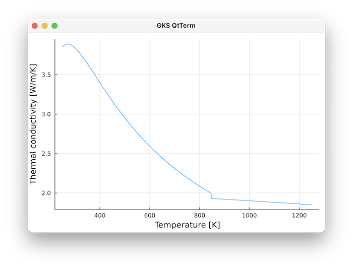
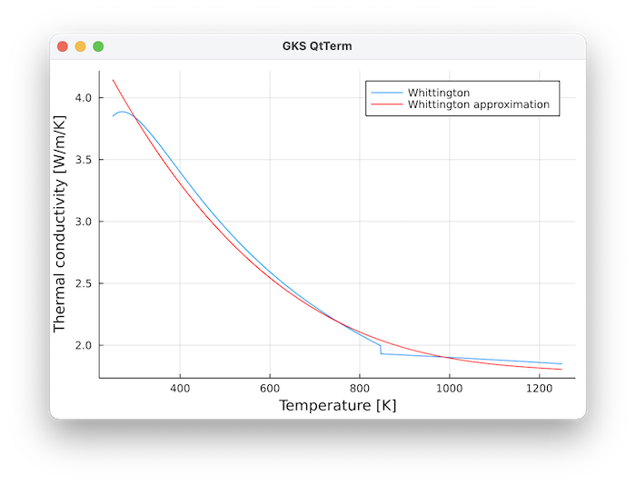

Conductivity
Methods
Thermal conductivity is defined as
GeoParams.MaterialParameters.Conductivity.ConstantConductivity — TypeConstantConductivity(k=3.0W/m/K)Set a constant conductivity
\[ k = cst\]
where $k$ is the thermal conductivity [$W/m/K$].
GeoParams.MaterialParameters.Conductivity.T_Conductivity_Whittington — TypeT_Conductivity_Whittington()Sets a temperature-dependent conductivity following the parameterization of Whittington, A.G., Hofmeister, A.M., Nabelek, P.I., 2009. Temperature-dependent thermal diffusivity of the Earth’s crust and implications for magmatism. Nature 458, 319–321. https://doi.org/10.1038/nature07818. Their parameterization is originally given for the thermal diffusivity, together with a parameterization for thermal conductivity, which allows us to compute
\[ Cp = a + b T - c/T^2\]
\[ \kappa = d/T - e \textrm{ if } T<=846K\]
\[ \kappa = f - g*T \textrm{ if } T>846K\]
\[ \rho = 2700 kg/m^3\]
\[ k = \kappa \rho Cp\]
where $Cp$ is the heat capacity [$J/mol/K$], and $a,b,c$ are parameters that dependent on the temperature T:
- a = 199.50 J/mol/K if T<= 846 K
- a = 199.50 J/mol/K if T> 846 K
- b = 0.0857J/mol/K^2 if T<= 846 K
- b = 0.0323J/mol/K^2 if T> 846 K
- c = 5e6J/mol*K if T<= 846 K
- c = 47.9e-6J/mol*K if T> 846 K
- d = 576.3m^2/s*K
- e = 0.062m^2/s
- f = 0.732m^2/s
- g = 0.000135m^2/s/K
This looks like:

Example
julia> using GLMakie, GeoParams
julia> p=T_Conductivity_Whittington();
julia> T,k,plt = PlotConductivity(p)GeoParams.MaterialParameters.Conductivity.T_Conductivity_Whittington_parameterised — TypeT_Conductivity_Whittington_parameterised()Sets a temperature-dependent conductivity that is parameterization after Whittington, et al. 2009
The original parameterization involves quite a few parameters; this is a polynomial fit that is roughly valid from 0-1000 Celsius
\[ k [W/m/K] = -2 10^{-9} (T-Ts)^3 + 6 10^{-6} (T-Ts)^2 - 0.0062 (T-Ts) + 4\]
\[ Ts = 273.15 K\]
where T[K] is the temperature in Kelvin (or the nondimensional equivalent of it).
The comparison of this parameterisation vs. the original one is: 
GeoParams.MaterialParameters.Conductivity.TP_Conductivity — TypeTP_Conductivity()Sets a temperature (and pressure)-dependent conductivity parameterization as described in Gerya, Numerical Geodynamics (2nd edition, Table 21.2). The general for
\[ k = \left( a_k + {b_k \over {T + c_k}} \right) (1 + d_k P)\]
where $k$ is the conductivity [$W/K/m$], and $a_k,b_k,c_k,d_k$ are parameters that dependent on the temperature T and pressure P:
- $a_k$ = 1.18Watt/K/m
- $b_k$ = 474Watt/m
- $c_k$ = 77K
- $d_k$ = 0/MPa
GeoParams.MaterialParameters.Conductivity.Set_TP_Conductivity — FunctionSet_TP_Conductivity["Name of temperature(-pressure) dependent conductivity"]This is a dictionary with pre-defined laws:
- "UpperCrust"
- "LowerCrust"
- "OceanicCrust"
- "Mantle"
Example
julia> k=Set_TP_Conductivity["Mantle"]
T/P dependent conductivity: k = (0.73 W K⁻¹ m⁻¹ + 1293 W m⁻¹/(T + 77 K))*(1 + 4.0e-5 MPa⁻¹*P)Computational routines
To compute, use this:
GeoParams.MaterialParameters.Conductivity.compute_conductivity — Functionk = compute_conductivity(P, T, s:<AbstractConductivity)Returns the thermal conductivity k at any temperature T and pressure P using any of the parameterizations implemented.
Currently available:
- ConstantConductivity
- T_Conductivity_Whittington
- TP_Conductivity
Example
Using dimensional units
julia> T = (250:100:1250)*K;
julia> cp = T_HeatCapacity_Whittington()
julia> Cp = ComputeHeatCapacity(0,T,cp)compute_conductivity!(K::AbstractArray{<:AbstractFloat}, Phases::AbstractArray{<:Integer}, P::AbstractArray{<:AbstractFloat},Temp::AbstractArray{<:AbstractFloat}, MatParam::AbstractArray{<:AbstractMaterialParamsStruct})In-place computation of conductivity K for the whole domain and all phases, in case a vector with phase properties MatParam is provided, along with P and Temp arrays. This assumes that the Phase of every point is specified as an Integer in the Phases array.
_________________________________________________________________________________________________________
compute_conductivity!(k::AbstractArray{T,N}, PhaseRatios::AbstractArray{T, M}, P::AbstractArray{<:AbstractFloat,N},T::AbstractArray{<:AbstractFloat,N}, MatParam::AbstractArray{<:AbstractMaterialParamsStruct})
In-place computation of density rho for the whole domain and all phases, in case a vector with phase properties MatParam is provided, along with P and T arrays. This assumes that the PhaseRatio of every point is specified as an Integer in the PhaseRatios array, which has one dimension more than the data arrays (and has a phase fraction between 0-1)
GeoParams.MaterialParameters.Conductivity.compute_conductivity! — Functioncompute_conductivity(k_array::AbstractArray{<:AbstractFloat,N},P::AbstractArray{<:AbstractFloat,N},T::AbstractArray{<:AbstractFloat,N}, s::ConstantConductivity) where NIn-place routine to compute constant conductivity